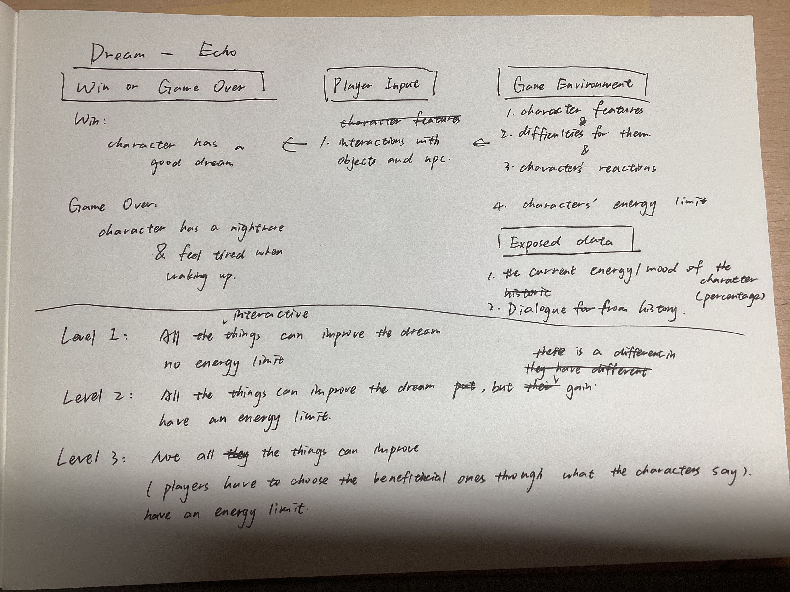

System Design
System Graph

The hand-drawn system graph by Wu Zhen — the original design reference for all game mechanics.
Data Model
Environment Data (read-only, set by the level)
| Variable | Description | Who sets it |
|---|---|---|
| Character features | Who the character is — personality, preferences, age | Level preset |
| Character difficulties | What actually troubles them — the emotional knots they carry | Level preset |
| Daily difficulty event | A specific event each morning (exam pressure, argument, loneliness, overwhelm, self-doubt) that changes which activities are truly beneficial | Randomly selected each run |
| Character reactions | Dialogue lines for each activity, revealing true feelings | Level preset |
| Energy limit | Daily energy budget (not used in Level 1; active in Levels 2 & 3) | Level preset |
Player-Controlled Data (chosen by the player)
| Variable | Description | Who controls it |
|---|---|---|
| Selected activities | Which objects/NPCs the player chooses to interact with during the day | Player |
System-Calculated Results (derived)
| Variable | Description | How it's derived |
|---|---|---|
| Mood % | Character's emotional state after activities | Sum of mood changes from each chosen activity |
| Excitement % | Accumulated stimulation level | Sum of excitement changes from each chosen activity |
| Energy % | Remaining daily energy (Levels 2 & 3 only) | Starting budget minus energy cost of each chosen activity |
| Dream type | serene / echoes / absurd / kaleidoscope / wandering / unexpectedCalm / drifting / descent | Mood, excitement, beneficial activities, + randomness |
| Wake state | energized / tired / neutral | Derived from dream type |
Feedback Relationships
Morning — Daily Difficulty
Each morning, Lin tells you about a specific difficulty (exam pressure, argument, loneliness, overwhelm, or self-doubt). This is the first thing to observe — it changes which activities are truly beneficial today.
Immediate — Character Reaction
After each activity, the character says a line. This is the fastest feedback, but it can be misleading — a polite response doesn't always mean the activity truly helped.
Immediate — Mood & Excitement %
Numerical gauges update after each action. You can see whether mood went up and excitement is building. But the dream outcome depends on the combination at bedtime.
Delayed — Dream Outcome
The dream is dynamically generated from the activities you chose — each activity contributes surreal imagery fragments that are woven into a unique narrative. There are 7 possible dream types, and the outcome isn't always predictable: sometimes the mind finds peace even without solving the problem.
Success and Failure Conditions
| Outcome | Condition | Wake-up state |
|---|---|---|
| ✅ Good dream | Mood > 50 and Excitement < 70 at sleep | Energized — start the day in a good mood |
| ❌ Nightmare | Mood ≤ 50 at sleep | Tired — wake up drained and in a low mood |
| ❌ Too exciting | Mood > 50 but Excitement ≥ 70 at sleep | Tired — even a "good" dream that's too intense leaves you exhausted |
Challenge Presets
Level 1
Tutorial — All Activities Help
Every activity improves the dream. No energy limit.
New constraint: doing too many activities raises excitement past the threshold — even "good" things can make the dream too exciting.
Learn the basic loop and discover that quantity isn't the answer.
Level 2
Resource Management
All activities still improve the dream, but now there's an energy budget.
Some activities cost more energy than others for the same mood gain.
You must choose efficient activities and can't do everything.
Level 3
Full Challenge — Attunement
Not all activities improve the dream. Some are mismatches for the character's real needs.
You must read their dialogue carefully to know which activities truly help.
Energy limit is still active. This is where the core learning shift fully kicks in.